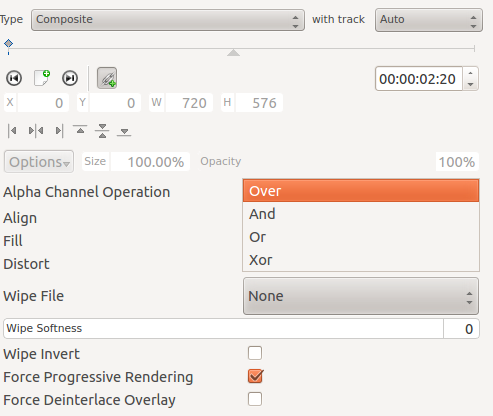
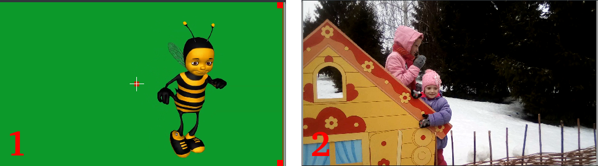
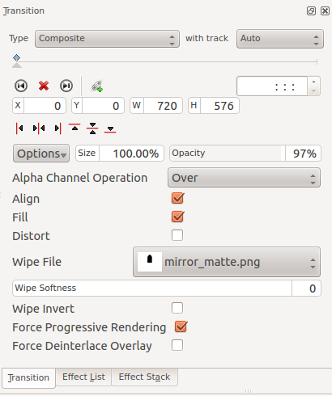

Composite Transition¶
Contents
The Composite transition combines the video data from two video tracks into one. This transition is used in combination with Alpha Channel information supplied by one of the Alpha manipulation or by the use of a Composite Transition. This Alpha Channel data describes how the data from the two video tracks should be combined. Until you define some alpha channel data using an Alpha manipulation or a Wipe File, changes in the Composite transition settings will have no visible effect.
Note: The disadvantages of the Composite transition are: luma bleed, and less precise position control. When compared to Affine, the Composite transition, it does not support rotation or skewing but it is much faster, albeit at the cost of luma bleed.
Alpha operations¶
{kind=link}
Alpha operation options are Over, ‘’And*,*Or*and*Xor*
Operation Over
The clip with alpha information is located on the top track: the selected color acquires transparency.
The clip with alpha information is located on the bottom track: we see only the top clip.
Operation And
The clip with the alpha information is located on the top track: the selected color becomes transparent.
The clip with alpha information is located on the bottom track: everything in the image becomes transparent, except for the selected color.
Operation Or clears any alpha information
Operation Xor
The clip with alpha information is located on the top track: everything in the image becomes transparent, except for the selected color.
The clip with alpha information is located on the bottom track: the selected color acquires transparency.
Tutorial 1¶
See this Chroma Key that describes how to use:
Alpha Manipulation -> Chroma Key
Composite Transition.
Crop and Transform -> Position and Zoom
Enhancement -> Sharpen
Alpha Manipulation -> Alpha operations
Tutorial 2 - composite transition and Blue Screen¶
Tutorial showing how to use the “Blue screen” function, composite transition and Effects to animate one image moving over another in the Kdenlive video editor.
Tutorial 3 - Video Masks¶
This tutorial uses the Composite transition and a custom video mask (a.k.a. a Wipe File or http://en.wikipedia.org/wiki/Matte_%28filmmaking%29*matte’’) to create an effect where you can make it appear that one video is playing on the screen of a still of a computer monitor.
The mask/matte is created with GIMP.
Save your mattes to /usr/share/kdenlive/lumas.
It would appear that you need to stop and restart Kdenlive in order for it to pick up new matte/wipe files saved in the above directory.
There appears to be a defect in this functionality which means that when the composite is on 100% Opacity, the wipe file does not work. You need to change it to 99% to make the effect kick in.
Screenshot of Composite transition using a custom wipe file to mask out a section of video - as described in Tutorial 3.
Aspirational goal - a compositing experiment made using detonation films free sample effects.
Warning: video below may be inappropriate for some users. https://youtu.be/vo-xntF1bns